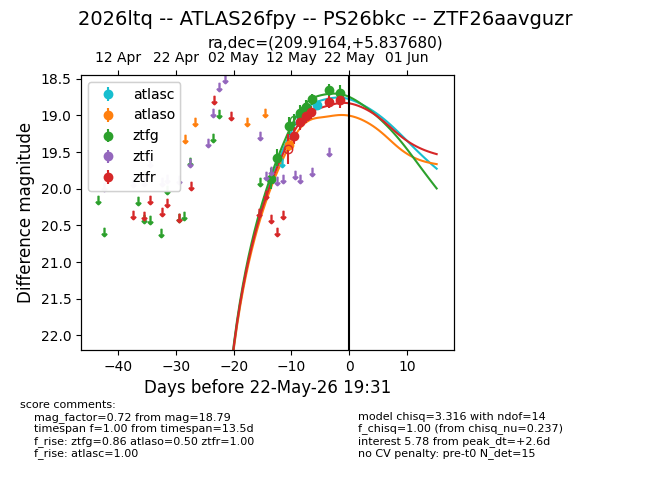
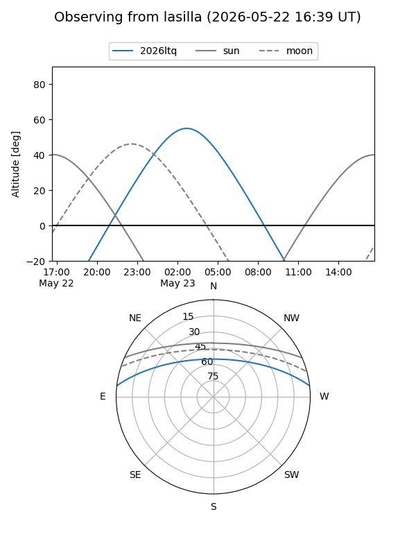
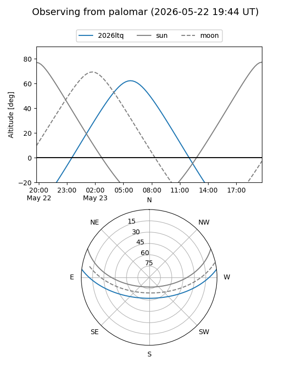
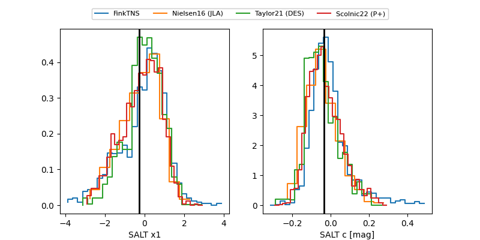

2026ltq
Target 2026ltq at 2026-05-22 19:33
Aliases and brokers:
lsst-FINK: link
lsst-Lasair: link
lsst-ALeRCE: link
ztf-FINK: link
ztf-Lasair: link
ztf-ALeRCE: link
TNS: link
YSE: link
alt names
ZTF26aavguzr (ztf,fink_ztf)
2026ltq (tns,yse)
ATLAS26fpy (atlas)
PS26bkc (panstarrs)
Coordinates:
equatorial (ra, dec) = 209.9164,+5.83768
equatorial (HMS+DMS) = 13:59:39.94,+05:50:15.65
galactic (l, b) = (343.3088,+63.22810)
Flags:
Photometry:
last atlasc=18.85, atlaso=19.40, ztfg=18.69, ztfr=18.79
2 atlasc, 1 atlaso, 8 ztfg, 6 ztfr detections
Lightcurve

Visibility


Additional plots
